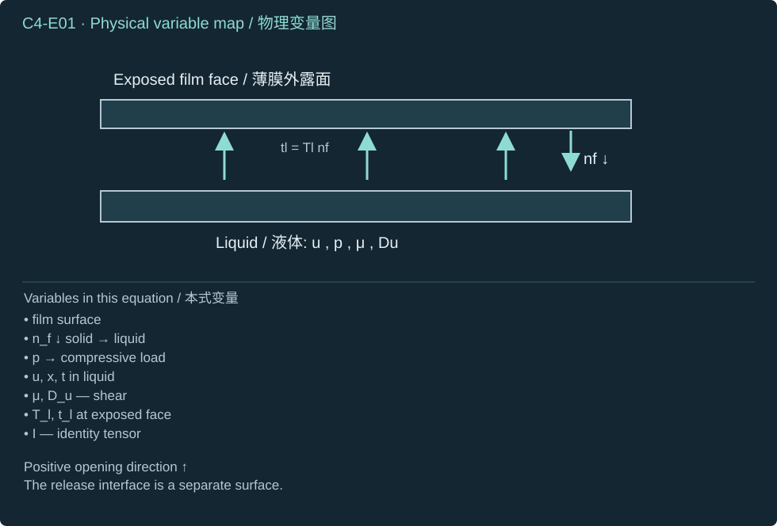
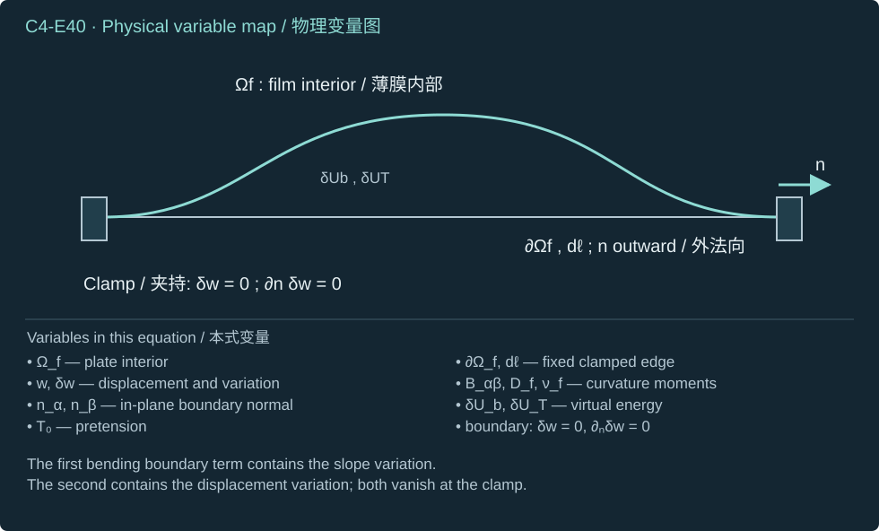
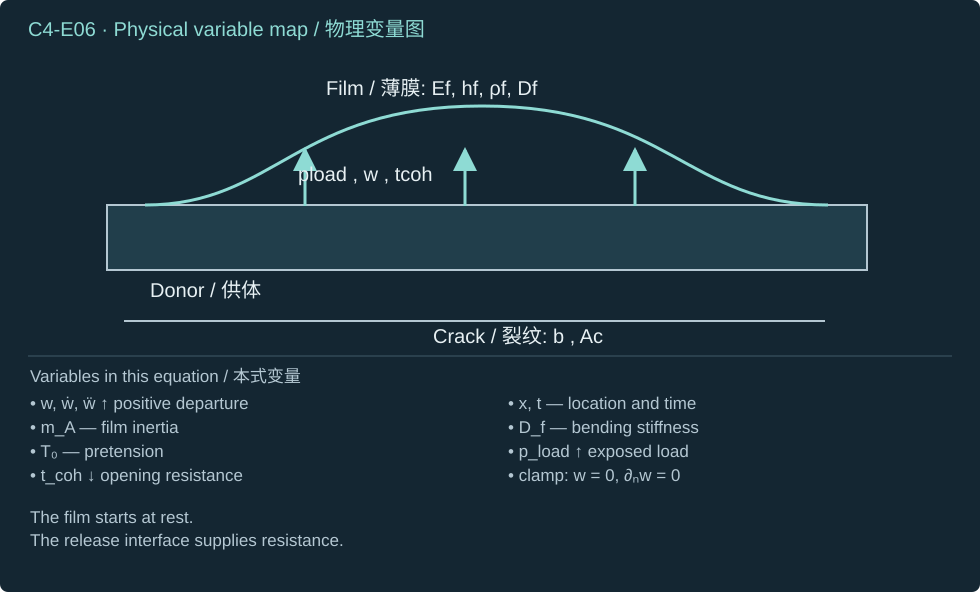
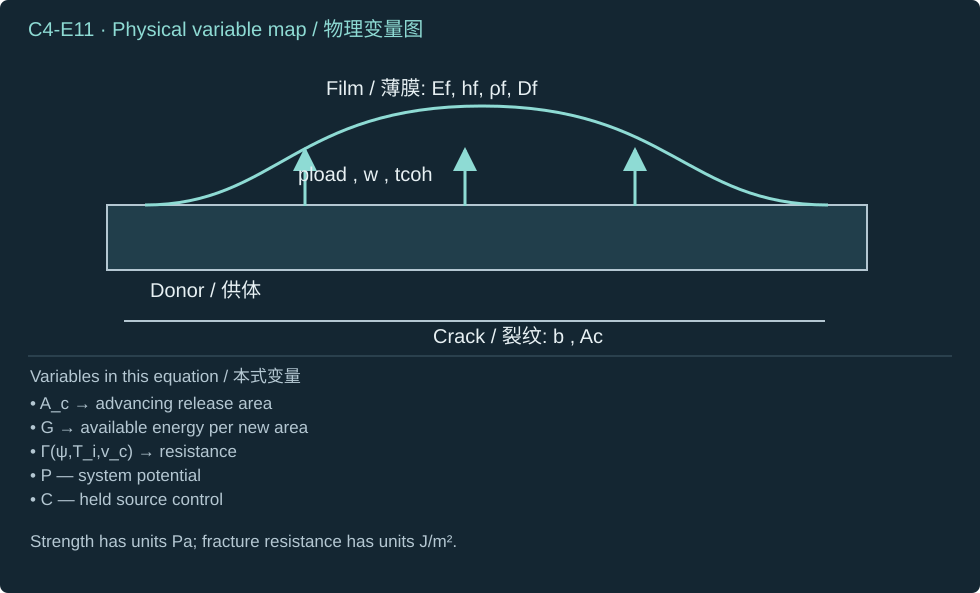
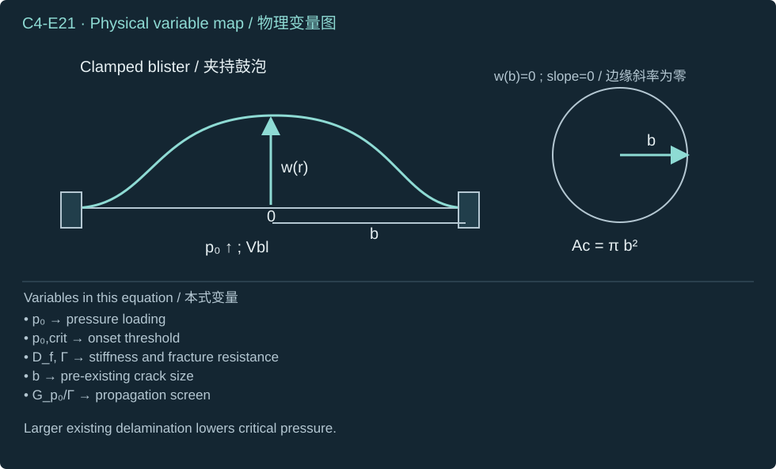
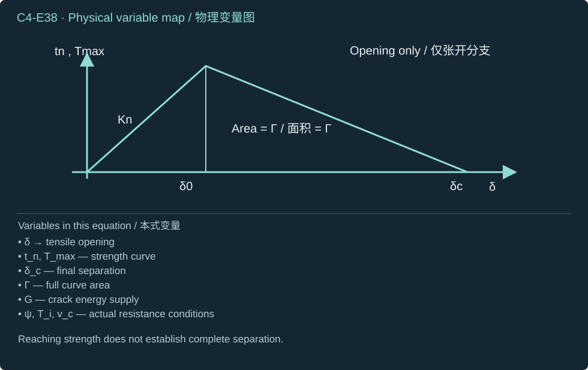
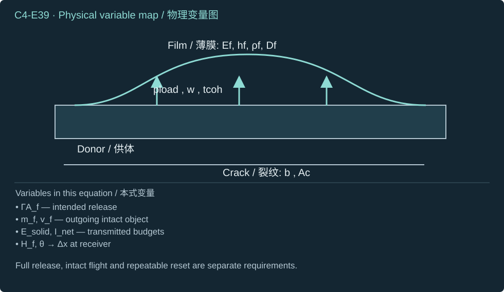

Film/PVC loading, transient structural response, interface separation, and transfer criteria.
薄膜／PVC受载、瞬态结构响应、界面分离与转印判据。
Does the delivered load release the intended interface without destroying the payload?
实际传递的载荷能否释放目标界面，同时不损坏被转印对象？
Convert the finite array output into an actual solid load, derive a controlled blister benchmark, and distinguish necessary release budgets from successful intact transfer.
将有限阵列输出转换为实际固体载荷，推导受控鼓泡基准，并区分必要释放预算与成功完整转印。
Awaiting your explanations / 待您解释
What this chapter enables
本章学习目标
Trace direct and intact-PVC load paths without equating exposed pressure to buried opening traction.
追踪直接及完整PVC传力路径，不把外露压力等同于埋藏张开牵引。
Derive transient areal inertia and the pressure-controlled circular blister fracture relation with explicit source work.
Prerequisite. Chapter 3: a specified finite arriving jet or array, including mass, energy, momentum, footprint and short-time impact limits.
先修知识。 第3章：指定的有限到达射流或阵列，包含质量、能量、动量、作用范围及短时冲击限制。
1 · The question is release of the intended interface
1 · 问题在于释放目标界面
A useful transfer event begins with a finite arriving liquid jet and ends with an intact object attached at its intended receiving location. Our objective is to connect the liquid load to film deformation, crack advance and departure. The input from Chapter 3 is a velocity field, liquid mass, momentum, kinetic energy, footprint and arrival history at a specified exposed surface. The output is an opening and fracture history at the actual donor/release interface. These two surfaces can occupy different positions in the stack.
Use Cartesian coordinates with the film initially in the horizontal plane. The positive vertical direction is the intended payload departure direction. The film starts at rest with its actual initial adhesion and any explicitly stated pre-existing delamination. The reduced plate examples use a stationary donor reference face; a moving donor requires its own momentum and power balances. Liquid pressure is a compressive normal stress; an opening traction is defined by relative separation of the two interface faces. They are not interchangeable signs. A prescribed fluid traction is an input boundary condition; a resolved fluid–solid calculation instead enforces compatible velocities and equal, opposite tractions. Never apply both as independent loads.
Coupled cavity thermodynamics, bulging and fracture; an outgoing jet need not exist.
耦合腔体热力学、鼓起与断裂；不一定存在出射射流。
An intact PVC sheet blocks liquid passage. A jet incident on PVC cannot also be assigned directly to the film behind it without an actual opening or rupture. A sealed cavity and an open liquid pocket are also different actuators. Appendix A compares those hydrogel architectures; the same load-path discipline applies here.
完整PVC片层阻挡液体穿过。射流冲击PVC后，若没有真实开口或破裂，就不能同时假设它直接冲击后方薄膜。封闭腔体与开放液体口袋也是不同致动器。附录 A 比较这些水凝胶结构；本章同样必须明确传力路径。
Working glossary and restrictions
基本符号与限制
Symbol
符号
Physical meaning
物理意义
SI units
SI 单位
Role and convention
作用与约定
nf
Solid-to-liquid unit normal
固体指向液体的单位法向
1
At a film with liquid below, it points downward; pressure traction can still push upward.
对于下方接触液体的薄膜，该法向向下；压力牵引仍可向上推动。
tl
Liquid traction on the solid
液体施加于固体的牵引
Pa
Stress contracted with the specified normal at the exposed face.
外露面上应力与指定法向的收缩。
p
Liquid absolute pressure
液体绝对压力
Pa
Acts compressively on the exposed face; release-interface opening depends on structural motion.
对外露面产生压缩作用；释放界面张开取决于结构运动。
q
Signed transverse applied load
带符号横向外加载荷
Pa
Positive in the upward film-opening direction; distinguishes applied pressure from net reactions.
沿薄膜向上张开方向取正；区分外加压力与净反力。
w
Film transverse displacement
薄膜横向位移
m
Positive upward; its spatial profile determines bending and interface opening.
向上取正；其空间分布决定弯曲与界面张开。
w˙
Film transverse velocity
薄膜横向速度
m s⁻¹
First time derivative of displacement; enters kinetic energy and power.
位移的一阶时间导数；进入动能及功率计算。
w¨
Film transverse acceleration
薄膜横向加速度
m s⁻²
Second time derivative of displacement; gives the areal inertial load.
位移的二阶时间导数；给出单位面积惯性载荷。
hf
Film thickness
薄膜厚度
m
Controls areal mass and the cubic thickness dependence of bending rigidity.
控制面质量及弯曲刚度对厚度的三次方依赖。
ρf
Film mass density
薄膜质量密度
kg m⁻³
Solid density used in areal mass; distinct from the incoming liquid density.
面质量采用的固体密度；与入射液体密度不同。
Ef
Film Young’s modulus
薄膜杨氏模量
Pa
Elastic stiffness for the declared thin-plate constitutive control.
指定薄板本构对照的弹性刚度参数。
νf
Film Poisson’s ratio
薄膜泊松比
1
Relates transverse and longitudinal elastic strains within the adopted isotropic model.
在所采用各向同性模型中关联横向与纵向弹性应变。
Df
Film bending rigidity
薄膜弯曲刚度
N m
Combines modulus, thickness and Poisson’s ratio; not a diffusivity or strain-rate tensor.
结合模量、厚度与泊松比；不是扩散率或应变率张量。
Γ
Practical interfacial fracture energy
实际界面断裂能
J m⁻²
Resistance per newly released area under the relevant mode and rate; not a geometric surface here.
相关模式与速率下单位新释放面积的阻力；此处不是几何曲面。
G
Mechanical energy-release rate
力学能量释放率
J m⁻²
Energy available per incremental crack area; compared with fracture resistance.
单位增量裂纹面积可获得的能量；与断裂阻力比较。
Tmax
Peak tensile cohesive traction
峰值拉伸内聚牵引
Pa
Local cohesive strength; not equivalent to interfacial fracture energy.
局部内聚强度；不等同于界面断裂能。
δ
Relative opening of the release interface
释放界面相对张开量
m
Relative displacement across the bonded interface; not the absolute displacement of one film.
粘接界面两侧的相对位移；不是某一薄膜的绝对位移。
a
Circular released/blister radius
圆形释放／鼓泡区域半径
m
Defines the crack front and domain size in the clamped circular-plate control.
在固支圆板对照中定义裂纹前缘与区域尺度。
t
Time
时间
s
Independent coordinate for pulse loading, inertia and fracture evolution.
脉冲受载、惯性及断裂演化的独立坐标。
∇∥
Film-plane spatial gradient
薄膜平面空间梯度
m⁻¹
Differentiates within the plate plane; it is an operator rather than a material parameter.
在薄板平面内求导；是算子，而非材料参数。
2 · Derive the solid load from fluid stress
2 · 从流体应力得到固体载荷
Step 1 — Adopt a Newtonian liquid constitutive law. Take the surface normal outward from the solid into the liquid. With that choice, the liquid stress contracted with this normal is the traction exerted by the liquid on the solid. For liquid below a horizontal film, that normal points downward and positive pressure pushes the film upward. It remains compressive stress on the exposed face; opening of a different bonded interface requires the film’s deformation and relative motion.
nf is the unit solid-to-liquid normal (dimensionless)
nf为固体指向液体的单位法向（无量纲）
tl is traction on the solid (Pa)
tl为固体上的牵引（Pa）
Conventions and conditions.∇ is the spatial gradient (m⁻¹); superscript T transposes a tensor; Subscripts u, l and f label velocity strain, liquid and film surface.
(C4-E01) · Constitutive assumption and traction identity
Du=2∇u+(∇u)T,Tl=−pI+2μDu,tl=Tlnf

Pressure and shear act at the exposed film face; the drawn normal fixes the traction sign.
压力与剪切作用于薄膜外露面；所画法向决定牵引符号。
Step 2 — Integrate the traction in space to obtain force. Integrate force in time to obtain impulse. To obtain work, project traction onto the surface velocity before integrating. Pressure in Pa, impulse in N s and work in J cannot be equated. A nearly rigid surface can receive a substantial short stress and impulse while its displacement, hence deformation work, remains small.
dA its surface-area element (m²), and ∫ denotes integration over the indicated surface or time
dA为表面积微元（m²），∫表示对所示表面或时间积分
tl is applied liquid traction (Pa)
tl为液体施加的牵引（Pa）
Fl its resultant (N)
Fl为其合力（N）
Il its impulse (N s)
Il为其冲量（N s）
Wl work delivered to the solid (J)
Wl为传入固体的功（J）
vf is local solid surface velocity (m s⁻¹)
vf为固体表面局部速度（m s⁻¹）
ta — Load-event start time (s)
ta — 载荷事件开始时刻（s）
tb — Load-event end time (s)
tb — 载荷事件结束时刻（s）
t — Time (s)
t — 时间（s）
dt — Time integration element (s)
dt — 时间积分微元（s）
Conventions and conditions. The vector dot product projects force onto velocity; Subscripts l and f label liquid and film; ta<tb fixes the integration interval..
The same footprint supplies force and impulse, but surface motion is additionally required for work.
同一作用范围决定力与冲量，而求功还需要表面运动信息。
3 · Retain the minimum transient film mechanics
3 · 保留最必要的薄膜瞬态力学
Step 3 — Adopt a homogeneous isotropic Kirchhoff–Love plate with linear elastic plane stress, small strains, small slopes and thickness small compared with its deformation length. Integrating density through thickness gives areal mass. Integrating the bending stress moment through the symmetric thickness gives bending stiffness: the second moment integral is the thickness cubed divided by twelve. A bonded multilayer requires its own laminate stiffness; two films’ stiffnesses cannot be added without locating the common neutral surface.
Areal inertia and bending stiffness come from different thickness integrals.
面惯性与弯曲刚度来自不同的厚度积分。
Step 4 — Form the kinetic, bending and prescribed-pretension energies. Curvature is the second spatial derivative of displacement in this linear plate model. The two in-plane curvature directions and twist couple through Poisson’s ratio. Pretension is held uniform; its energy penalizes slope. These expressions distinguish the energy stored by shape from the kinetic energy carried by motion.
T0≥0 prescribed isotropic tensile force per edge length (N m⁻¹)
T0≥0为给定各向同性单位边长拉力（N m⁻¹）
Kf — Film kinetic energy (J)
Kf — 薄膜动能（J）
Ub — Plate bending energy, not bubble internal energy in this unit (J)
Ub — 板弯曲能，本单元不表示气泡内能（J）
UT — Stored pretension energy (J)
UT — 预张力储能（J）
Conventions and conditions. A dot differentiates in time; subscripts xx,yy,xy differentiate twice in the indicated coordinates, giving curvatures (m⁻¹); ∇∥ is the in-plane gradient; ∣∣ denotes Euclidean magnitude; ∫ denotes area integration; Labels f, b, T identify film, bending and tension.
Bending energy is stored by curvature; inertia depends on velocity.
曲率储存弯曲能，速度决定惯性动能。
Step 5 — Vary displacement while holding a clamped boundary fixed. Two integrations by parts convert each bending second derivative to a fourth derivative acting on displacement; the boundary terms vanish because both the displacement variation and its normal slope vanish. One integration by parts converts the tension term to a negative Laplacian. The resulting transverse virtual-work balance has pressure units in every term.
Ωf is the smooth reference film plane (m²), ∂Ωf its boundary
Ωf为光滑薄膜参考平面（m²），∂Ωf为其边界
dA area element (m²)
dA为面积微元（m²）
dℓ boundary arc-length element (m)
dℓ为边界弧长微元（m）
w is displacement (m)
w为位移（m）
δw an admissible infinitesimal variation (m)
δw为容许无穷小变分（m）
δUb — Bending-energy variation (J)
δUb — 弯曲能变分（J）
δUT — Pretension-energy variation (J)
δUT — 预张力能变分（J）
α — Cartesian in-plane direction index, taking 1 or 2 (dimensionless)
α — 取 1 或 2 的笛卡尔面内方向指标（无量纲）
β — Cartesian in-plane direction index, taking 1 or 2 (dimensionless)
β — 取 1 或 2 的笛卡尔面内方向指标（无量纲）
wαβ=∂α∂βw is curvature (m⁻¹)
wαβ=∂α∂βw为曲率（m⁻¹）
Df is bending stiffness (N m)
Df为弯曲刚度（N m）
νfPoisson’s ratio
νf为泊松比
T0 pretension (N m⁻¹)
T0为预张力（N m⁻¹）
Bαβ the bending-energy tensor conjugate to curvature (N)
Bαβ为与曲率共轭的弯曲能张量（N）
δαβ is the dimensionless Kronecker identity, distinct from variation notation
δαβ为无量纲Kronecker单位张量，与变分记号不同
nα — Component of the outward in-plane unit normal (dimensionless)
nα — 面内外单位法向的分量（无量纲）
nβ — Component of the outward in-plane unit normal (dimensionless)
nβ — 面内外单位法向的分量（无量纲）
0 is zero gradient (dimensionless)
0为零梯度（无量纲）
Conventions and conditions.∂α is coordinate differentiation (m⁻¹); ∂n its derivative; ∇∥ and ∇∥2 are in-plane gradient and Laplacian; ∫,∮ denote area and closed-boundary integrals; ⇒ uses zero tangential derivative of an identically zero boundary variation plus the prescribed zero normal derivative; ∑α,β=12 sums all four index pairs..
BαβδUbδUTδw=0,∂nδw=0=Df[(1−νf)wαβ+νfδαβ∇∥2w],=α,β=1∑2∫ΩfBαβ∂α∂β(δw)dA=α,β=1∑2∮∂ΩfnαBαβ∂β(δw)dℓ−α,β=1∑2∫Ωf(∂αBαβ)∂β(δw)dA=α,β=1∑2∮∂Ωf[nαBαβ∂β(δw)−nβ(∂αBαβ)δw]dℓ+α,β=1∑2∫Ωf(∂β∂αBαβ)δwdA,=T0∮∂Ωfδw∂nwdℓ−T0∫Ωfδw∇∥2wdA,⟹∇∥δw=0on the fixed clamp.

Two integrations by parts expose the boundary moment and shear terms before they are removed.
两次分部积分先明确显示边界弯矩与剪力项，再依据条件将其消去。
Symbols before Eq. (C4-E05).
式（C4-E05）前的符号定义。
First individual definition / 第一项单独定义
Second individual definition / 第二项单独定义
δw is a displacement variation (m)
δw为位移变分（m）
Ub — Plate bending energy, not bubble internal energy in this unit (J)
Ub — 板弯曲能，本单元不表示气泡内能（J）
UT — Stored pretension energy (J)
UT — 预张力储能（J）
Df is bending stiffness (N m)
Df为弯曲刚度（N m）
νf is dimensionless Poisson’s ratio
νf为无量纲泊松比
T0 is uniform pretension (N m⁻¹)
T0为均匀预张力（N m⁻¹）
w is transverse displacement (m)
w为横向位移（m）
x — First Cartesian in-plane coordinate (m)
x — 第一笛卡尔面内坐标（m）
y — Second Cartesian in-plane coordinate (m)
y — 第二笛卡尔面内坐标（m）
Ωf is film area (m²)
Ωf为薄膜面积（m²）
dA is its element (m²)
dA为面积微元（m²）
Conventions and conditions. Subscripts xxxx,xxyy,yyyy denote the indicated fourth derivatives (m⁻³); ∇∥2=∂x2+∂y2 is the in-plane Laplacian; ∇∥4 is that Laplacian applied twice; ∫ is area integration; The variations and their normal slopes vanish at a clamped boundary; δ denotes an infinitesimal admissible variation, not physical crack opening here.
A fixed clamp removes the boundary virtual-work terms.
固定夹持边界使边界虚功项消失。
Symbols before Eq. (C4-E06).
式（C4-E06）前的符号定义。
First individual definition / 第一项单独定义
Second individual definition / 第二项单独定义
w(x,t) is film displacement in the positive departure direction (m)
w(x,t)为沿正离开方向的薄膜位移（m）
x=(x,y) is in-plane position (m)
x=(x,y)为面内位置（m）
t time (s)
t为时间（s）
w˙ — Film transverse velocity (m s⁻¹)
w˙ — 薄膜横向速度（m s⁻¹）
w¨ — Film transverse acceleration (m s⁻²)
w¨ — 薄膜横向加速度（m s⁻²）
mA is areal mass (kg m⁻²)
mA为面密度（kg m⁻²）
Df bending stiffness (N m)
Df为弯曲刚度（N m）
T0≥0 pretension (N m⁻¹)
T0≥0为预张力（N m⁻¹）
pload is net applied transverse traction projected positively (Pa)
pload为沿正方向投影的净外加横向牵引（Pa）
tcoh≥0 is an opening-resisting cohesive traction magnitude (Pa)
tcoh≥0为抵抗张开的内聚牵引幅值（Pa）
Conventions and conditions.∇∥2 is in-plane Laplacian (m⁻²), and ∇∥4 its square; ∂n differentiates along the outward in-plane boundary normal; Initial zero is displacement or velocity according to its row; Labels load and coh identify applied and cohesive forces.
(C4-E06) · Reduced transient momentum balance with explicit initial/boundary data
mAw¨+Df∇∥4w−T0∇∥2ww(x,0)=0,w˙(x,0)w=0,∂nw=pload−tcoh,=0,=0on a clamped edge.

Film acceleration balances applied traction, elastic restoring forces and cohesive resistance.
薄膜加速度由外加牵引、弹性恢复力与内聚阻力的平衡决定。
A fixed clamp also has zero boundary velocity and zero normal velocity slope. Multiply the plate balance by velocity and integrate over its plane. The inertia term differentiates kinetic energy; the same two spatial integrations by parts now differentiate bending energy, and one differentiates pretension energy. Thus the transient balance has a direct work check. Cohesive power is the work rate taken from plate motion; its recoverable and irreversible parts must be assigned by the interface law.
Ub — Plate bending energy, not bubble internal energy in this unit (J)
Ub — 板弯曲能，本单元不表示气泡内能（J）
UT — Stored pretension energy (J)
UT — 预张力储能（J）
t is time (s)
t为时间（s）
Conventions and conditions.d/dt is its derivative; ∇∥2 is planar Laplacian and ∇∥4 its square; ∫ is area integration; The derivatives are valid for the stated constant parameters and sufficiently regular fields at a fixed clamp with zero velocity and normal velocity slope; Every row has power units W; f, b, T, load and coh label film, bending, tension, applied and cohesive.
The transient plate equation conserves power between applied work, motion, shape and interface response.
瞬态薄板方程在外加功、运动、形状与界面响应之间保持功率守恒。
This equation is an exact balance inside an adopted reduced plate model, not an exact description of every payload. Its bending and tension terms have units N m × m⁻³ and N m⁻¹ × m⁻¹, respectively, both Pa. Setting mass to zero recovers quasistatic balance; setting stiffness, tension and cohesion to zero recovers free areal acceleration. Large slope, significant stretching, plasticity, crystal anisotropy, finite thickness or evolving contact requires a refined structural model. The static clamped-plate law is independently documented in the MIT plate notes; the derivation here retains transient inertia. MIT plate benchmark
此方程是在所采用降阶薄板模型内部的严格平衡，而非所有对象的精确描述。弯曲项与张力项的单位分别为N m × m⁻³及N m⁻¹ × m⁻¹，均为Pa。将质量设为零得到准静态平衡；将刚度、张力及内聚力设为零则得到无约束面质量的自由加速。大斜率、显著拉伸、塑性、晶体各向异性、有限厚度或变化接触需要更完善的结构模型。静态夹持薄板关系可由MIT薄板讲义独立核对；本章推导保留瞬态惯性。MIT薄板基准
Step 6 — Keep the intermediate PVC sheet as a mechanical participant. As a simple transverse two-sheet model, assign each layer its own areal inertia, stiffness and support. The unknown transmitted traction acts with opposite signs on the two sheets by Newton’s third law. A contact or bond law must determine it. This model does not describe a fully bonded laminate’s in-plane composite bending; such a laminate needs compatibility and the appropriate laminate stiffness instead.
Conventions and conditions. double dots are accelerations (m s⁻²); ∇∥2 is the in-plane Laplacian and ∇∥4 its square; P labels PVC, f film, A areal, liq liquid and coh cohesion; the arrow labels the transmission direction; Each sheet has its actual initial and support conditions; No value of transmitted traction is supplied without an additional contact/bond closure.
The PVC-to-film load follows intermediate-sheet motion and contact.
PVC传向薄膜的载荷由中间片层运动与接触决定。
Step 7 — Integrate the transient film equation through a finite pulse. The exact reduced balance includes the time-integrated restoring and cohesive forces. Only when those impulses are small compared with the applied impulse does a free velocity jump follow. A film clamped to a rigid donor over the entire loaded region does not meet that condition. Spatially resolved fluid inertia must not be counted again as an independently added fluid mass.
Conventions and conditions.∇∥2 and ∇∥4 are the in-plane Laplacian and its square; ∫ integrates the actual local load/response during the pulse; Labels A, f, load and coh mean areal, film, applied and cohesive.
Pulse integration exposes the reactions that can invalidate a free velocity jump.
脉冲积分明确显示哪些反作用冲量会使自由速度跃变失效。
Symbols before Eq. (C4-E09).
式（C4-E09）前的符号定义。
First individual definition / 第一项单独定义
Second individual definition / 第二项单独定义
Δw˙ is the film velocity change from rest (m s⁻¹)
Δw˙为薄膜从静止开始的速度变化（m s⁻¹）
JA is local applied impulse per area (Pa s)
JA为局部单位面积外加冲量（Pa s）
mA>0 film areal mass (kg m⁻²)
mA>0为薄膜面密度（kg m⁻²）
EA resulting kinetic energy per area (J m⁻²)
EA为所得单位面积动能（J m⁻²）
Conventions and conditions.≃ marks negligible restoring/cohesive impulse during the pulse, not guaranteed transmission through an adhered stack; Subscript A labels quantities per area; Δ denotes final-minus-initial difference, and a dot is a time derivative.
Impulse creates film kinetic energy that may subsequently feed deformation and fracture.
冲量产生薄膜动能，之后才可能转入变形与断裂。
For a deformation varying over a lateral length, compare the pulse duration with bending and tension response scales obtained by balancing inertia with the corresponding restoring term. A small-opening cohesive stiffness supplies a third scale. These are transient comparisons, not an invitation to a harmonic-resonance curriculum. A slow pulse alone is also insufficient to claim equilibrium if its shape is abrupt or its crack is rapidly propagating.
tnscale — Normal-cohesion response-time estimate (s)
tnscale — 法向内聚响应时间估计（s）
af>0 is lateral deformation length (m)
af>0为横向变形长度（m）
mA>0 areal mass (kg m⁻²)
mA>0为面密度（kg m⁻²）
Df>0 bending stiffness (N m)
Df>0为弯曲刚度（N m）
T0>0 pretension (N m⁻¹)
T0>0为预张力（N m⁻¹）
Kn>0 small-opening normal cohesive stiffness (Pa m⁻¹)
Kn>0为小张开法向内聚刚度（Pa m⁻¹）
Conventions and conditions. superscript scale labels estimates and subscripts b, T, n identify the restoring mechanisms; is the positive root; If pretension or cohesion is absent, its corresponding timescale is omitted rather than divided by zero.
Pulse duration must be compared with the response scales of the actual load path.
脉冲持续时间须与实际传力路径的响应尺度比较。
4 · Separate strength from fracture work
4 · 区分强度与断裂功
Step 8 — Define crack driving force under an explicit loading control. Peak tensile cohesive traction is a local strength in Pa. Reversible work of adhesion is a thermodynamic surface-energy difference. Practical fracture energy includes the dissipation required to advance the real interface and has units J m⁻². For a quasistatic conservative mechanical system, differentiate its potential with respect to crack area while holding the stated source control fixed. Opening/shear mixture, temperature and crack speed can change the resistance.
P total mechanical potential including the external loading system (J)
P为包含外部加载系统的总力学势能（J）
Ac crack area (m²), and ∂/∂Ac a partial derivative
Ac为裂纹面积（m²），∂/∂Ac为偏导数
C labels the held loading control, such as pressure or displacement (—)
C标识保持不变的加载控制量，例如压力或位移，而非材料系数（—）
Γ is fracture resistance (J m⁻²)
Γ为断裂阻力（J m⁻²）
ψ mode-mixture parameter (dimensionless)
ψ为模态混合参数（无量纲）
Ti interface temperature (K)
Ti为界面温度（K）
vc crack-front speed (m s⁻¹)
vc为裂纹前沿速度（m s⁻¹）
Conventions and conditions. it is not a material coefficient; Subscripts c and i label crack and interface; The inequality is an energetic propagation criterion for the specified fracture model, not a sufficient transfer criterion.
约定与条件。 下标c与i表示裂纹及界面；此不等式是指定断裂模型的能量扩展判据，而非充分转印判据。
(C4-E11) · Definition with quasistatic fracture criterion
G=−∂Ac∂PC,G≥Γ(ψ,Ti,vc)

A crack is driven by energy per newly separated area, under a specified load control.
裂纹由每单位新分离面积的可用能量驱动，且加载控制必须明确。
The fluid pressure cannot be compared directly with fracture energy without a deformation length and mechanical relation. Transfer also involves competing fracture paths: the intended donor interface may release, an unintended bond may fail, or the payload may tear. Feng and colleagues studied how interface kinetics alter that competition in transfer printing; their result motivates measuring the actual rate and temperature dependence, not importing their PDMS values into a new PFC stack. [R10]
During rapid fracture, retain kinetic energy. For a specified crack-front model, the instantaneous solid power balance contains elastic storage, inertia, fracture consumption and other dissipation. This expression assumes that the chosen fracture energy accounts for the cohesive dissipation once; do not add a second copy of the same dissipation. It does not determine the crack path without the structural and interface equations.
Pload is mechanical power delivered to the solid (W)
Pload为传入固体的力学功率（W）
Kf its kinetic energy (J)
Kf为固体动能（J）
Uf its recoverable elastic energy including any recoverable interface energy (J), and d/dt the time derivative with t in s
Uf为可恢复弹性能，含任何可恢复界面能（J），d/dt为时间导数
Lc is the active crack-front line (—)
Lc为活跃裂纹前沿曲线（—）
dℓ is its arc-length element (m)
dℓ为弧长微元（m）
vc≥0 is front speed (m s⁻¹)
vc≥0为前沿速度（m s⁻¹）
Γfracture energy (J m⁻²)
Γ为断裂能（J m⁻²）
ψ dimensionless mode mixture
ψ为无量纲模态混合参数
Ti interface temperature (K)
Ti为界面温度（K）
Pother≥0 is additional nonfracture dissipation (W)
Pother≥0为其他非断裂耗散（W）
t — Time (s)
t — 时间（s）
Conventions and conditions.∫ integrates along the front; Labels load, f, c, i and other denote applied, solid film, crack, interface and remaining dissipative processes.
Dynamic loading can store kinetic energy before or during crack advance.
动态载荷可在裂纹扩展前或扩展中储存动能。
5 · Derive the circular blister benchmark completely
5 · 完整推导圆形鼓泡基准
Step 9 — Specify a solvable pressure-controlled limit. A circular pre-existing delamination lies beneath a thin isotropic plate; the bonded outer region clamps its edge. An external reservoir maintains a uniform positive pressure difference while the crack radius varies. Neglect inertia, pretension and membrane stretching. At the centre there is no point force or singular bending moment; displacement and curvature remain regular. This is a separate benchmark, not the 25-jet transient load.
Conventions and conditions.d/dr and a prime denote radial differentiation; the operator at r=0 is its regular limit; Labels r, f and 0 denote radial operator, film/arbitrary function according to context, and maintained load; The two zero values prescribe edge displacement and slope.
Uniform pressure loads a clamped circular delamination with regular central fields.
均匀压力作用于边缘夹持的圆形脱层，中心场必须正则。
Step 10 — First solve for the curvature sum. Multiply its radial Laplacian equation by radius, integrate once, and divide by radius only away from the centre. Regularity of the curvature gradient eliminates the inverse-radius term. Integrating again leaves a constant curvature offset, which the edge slope will later fix.
g(r)=Lrw is the curvature sum (m⁻¹), with a prime and d/dr denoting radial differentiation
g(r)=Lrw为曲率和（m⁻¹），撇号及d/dr表示径向求导
p0 is maintained pressure difference (Pa)
p0为恒定压差（Pa）
Df bending stiffness (N m)
Df为弯曲刚度（N m）
C1 — Curvature integration constant (m⁻¹)
C1 — 曲率积分常数（m⁻¹）
C2 — Curvature integration constant (m⁻¹)
C2 — 曲率积分常数（m⁻¹）
Lr is the radial Laplacian (m⁻²)
Lr为径向拉普拉斯算子（m⁻²）
w displacement (m)
w为位移（m）
Conventions and conditions.C1=0 follows from regular central curvature gradient and absence of a point load; the subscript 0 labels the maintained pressure, not the initial liquid pressure.
Regularity removes the singular integration constant before edge conditions are used.
在使用边缘条件之前，正则性先排除奇异积分常数。
Step 11 — Integrate the curvature sum to obtain displacement. The first integral gives a possible inverse-radius slope, excluded by central regularity. The second produces a quartic particular solution plus quadratic and constant terms. Apply zero slope at the edge to find the curvature offset, then zero edge displacement to find the remaining constant.
Conventions and conditions. A prime and d/dr are radial derivatives; C3=0 excludes a central inverse-radius slope; All rows are regular-limit solutions at the centre; Subscripts 2,3,4 index distinct constants, not derivative orders.
The regular displacement contains quartic, quadratic and constant contributions.
正则位移含四次项、二次项与常数项。
Symbols before Eq. (C4-E16).
式（C4-E16）前的符号定义。
First individual definition / 第一项单独定义
Second individual definition / 第二项单独定义
w(r) is displacement (m)
w(r)为位移（m）
w′ radial slope (dimensionless)
w′为径向斜率（无量纲）
r∈[0,b] radial position (m)
r∈[0,b]为径向位置（m）
b>0delamination radius (m), allowing division by b
b>0为脱层半径（m），因此可以除以b
p0>0 is maintained pressure (Pa)
p0>0为恒定压力（Pa）
Df>0 bending stiffness (N m)
Df>0为弯曲刚度（N m）
C2 curvature constant (m⁻¹)
C2为曲率常数（m⁻¹）
C4 displacement constant (m)
C4为位移常数（m）
Conventions and conditions. The prime denotes d/dr; ⇒ denotes the algebraic consequence of each clamped boundary condition; Subscripts 2 and 4 label constants, and f labels film.
约定与条件。 撇号表示d/dr；⇒表示各夹持边界条件的代数结果；下标2与4标识常数，f表示薄膜。
(C4-E16) · Exact solution of the stated linear-plate benchmark
Applying both edge conditions fixes the unique regular blister profile.
同时应用两个边缘条件，确定唯一正则鼓泡轮廓。
Step 12 — Check the solution by substitution, not only by its shape. The radial Laplacian of radius squared is four; that of radius to the fourth is sixteen times radius squared. Applying it twice gives a constant sixty-four. The edge displacement and slope vanish. Positive pressure gives positive centre opening, and stiffness tending upward suppresses displacement. The dimensions are Pa × m⁴ /(N m) = m. This agrees with the clamped circular solution in MIT Lecture 7, Eq. 7.24.
步骤12——通过代入检验解，而不仅仅观察轮廓。半径平方的径向拉普拉斯为四；半径四次方的径向拉普拉斯为十六倍半径平方。再作用一次得到常数六十四。边缘位移与斜率均为零。正压力给出正中心张开，刚度增大则抑制位移。量纲为Pa × m⁴ /(N m) = m。结果与MIT第7讲式7.24的夹持圆板解一致。
Symbols before Eq. (C4-E17).
式（C4-E17）前的符号定义。
First individual definition / 第一项单独定义
Second individual definition / 第二项单独定义
Lr is the radial planar Laplacian (m⁻²), and superscript 2 on the operator means composition twice
Lr为径向平面拉普拉斯算子（m⁻²），算子上的上标2表示连续作用两次
r is radial position (m)
r为径向位置（m）
bdelamination radius (m)
b为脱层半径（m）
wblister displacement (m), and its prime is radial slope
w为鼓泡位移（m），其撇号为径向斜率
Df is bending stiffness (N m)
Df为弯曲刚度（N m）
p0 maintained pressure (Pa)
p0为恒定压力（Pa）
Lr(r2) is dimensionless
Lr(r2)无量纲
Lr(r4) has units m²
Lr(r4)单位为m²
Conventions and conditions. superscripts on r are powers; Literal 4 and 16 are numerical coefficients; The slope expression vanishes at r=0; r=b.
约定与条件。r上的上标表示幂；数字4与16是数值系数；斜率式在r=0及r=b均为零。
(C4-E17) · Governing-equation and boundary verification
Direct radial differentiation verifies the pressure balance and regular clamped profile.
直接径向求导可检验压力平衡及正则夹持轮廓。
Step 13 — Integrate displacement to obtain added cavity volume. The axisymmetric surface element contains radius times radial increment, so this is not merely centre displacement times area. Expand the square, integrate each power, and evaluate the limits. The first two endpoint contributions cancel; the final sixth-power contribution remains.
Conventions and conditions.∫ is radial integration; Subscript bl labels the blister; superscripts on lengths are powers; []0b denotes antiderivative at the upper endpoint minus its value at zero.
Blister volume sums the opening of all concentric annuli.
鼓泡体积等于各同心圆环张开贡献之和。
Step 14 — Include the maintained-pressure source in potential energy. At a fixed crack radius, displacement and volume scale linearly with pressure. The elastic energy is the area under the pressure–volume loading curve, one half pressure times volume. The pressure reservoir’s potential contribution is negative pressure times volume. Subtracting it leaves a negative half-product. Using only stored plate energy would give the wrong sign for pressure-controlled crack driving force.
Cb>0 is blister volume compliance (m³ Pa⁻¹), defined by the pressure derivative at fixed radius, including the regular zero-load value
Cb>0为鼓泡体积柔度（m³ Pa⁻¹），由固定半径下的压力导数定义，包含正则零载荷值
Vbl≥0 is added volume (m³)
Vbl≥0为新增体积（m³）
p0≥0 maintained pressure (Pa)
p0≥0为恒定压力（Pa）
b>0 crack radius (m)
b>0为裂纹半径（m）
Df>0 bending stiffness (N m)
Df>0为弯曲刚度（N m）
Ub is stored plate bending energy (J)
Ub为板弯曲储能（J）
P plate-plus-pressure-reservoir potential (J)
P为板与恒压储库的总势能（J）
v a dummy volume along the fixed-radius elastic loading curve (m³), with dv its element (m³)
v为固定半径弹性加载曲线上的虚拟体积变量（m³）
dv — Dummy-volume integration element (m³)
dv — 体积哑变量积分微元（m³）
Conventions and conditions.∂/∂p0 is the pressure derivative; the vertical bar holds radius fixed; ∫ integrates that loading curve; Subscripts b and bl label blister compliance/bending and blister volume, respectively; the meanings are explicitly fixed here; No crack-area variation is taken during the loading-curve integral; For positive pressure, compliance also equals volume divided by pressure; at zero pressure the derivative avoids division by zero.
Source work changes the sign of the relevant total potential.
压力源做功改变相关总势能的符号。
Step 15 — Differentiate the total potential with respect to radius and divide by the corresponding area derivative. Both derivatives retain their numerical factors. A positive pressure produces a positive energy-release rate because increasing delamination compliance lowers the plate-plus-reservoir potential. Doubling crack radius at the same pressure increases the driving force sixteenfold in this bending limit.
P total potential including maintained pressure (J)
P为包含恒压源的总势能（J）
p0 fixed pressure difference (Pa)
p0为固定压差（Pa）
Df bending stiffness (N m)
Df为弯曲刚度（N m）
Gp0 is energy-release rate under that control (J m⁻²)
Gp0为该控制方式下的能量释放率（J m⁻²）
Conventions and conditions.d/db differentiates in radius; the vertical bar and subscript p0 indicate held pressure; Subscript c labels crack area; all length superscripts are powers; Positive b makes the area derivative nonzero.
Geometry and compliance convert pressure into fracture energy per area.
几何与柔度将压力转换为单位面积断裂能。
Symbols before Eq. (C4-E21).
式（C4-E21）前的符号定义。
First individual definition / 第一项单独定义
Second individual definition / 第二项单独定义
p0,crit>0 is critical maintained pressure (Pa) for constant fracture resistance Γ>0 (J m⁻²)
p0,crit>0为恒定断裂阻力Γ>0（J m⁻²）对应的临界恒压（Pa）
Df>0 is bending stiffness (N m)
Df>0为弯曲刚度（N m）
b>0delamination radius (m)
b>0为脱层半径（m）
p0≥0 applied maintained pressure (Pa)
p0≥0为外加恒压（Pa）
Gp0 the corresponding energy-release rate (J m⁻²)
Gp0为相应能量释放率（J m⁻²）
Γ — Practical interfacial fracture energy (J m⁻²)
Γ — 实际界面断裂能（J m⁻²）
Conventions and conditions. is the positive root; subscript crit labels the onset threshold; The quotient Gp0/Γ is dimensionless; This onset criterion assumes an existing crack and the quasistatic bending model.
(C4-E21) · Derived onset threshold within the benchmark
p0,crit=b2128DfΓ,ΓGp0=(p0,critp0)2

The pressure threshold depends on crack geometry and fracture resistance, not pressure alone.
压力阈值取决于裂纹几何及断裂阻力，而非压力本身。
Step 16 — Change the loading control explicitly. Hold the added volume fixed, with no continuing pressure-reservoir work. Eliminate pressure using volume compliance, differentiate plate storage at fixed volume, and substitute the instantaneous pressure back. The instantaneous expression matches the pressure-controlled value at the same state, but the evolution differs: increasing radius raises the constant-pressure driving force and lowers the constant-volume driving force. For constant resistance this distinguishes destabilizing pressure control from stabilizing volume control in the adopted model. A sealed laser-heated cavity has finite mass and evolving temperature, so neither simple control is automatically its trajectory.
GVˉ — Energy-release rate at fixed added volume (J m⁻²)
GVˉ — 固定新增体积下的能量释放率（J m⁻²）
Gp0 — Energy-release rate at fixed maintained pressure (J m⁻²)
Gp0 — 固定恒定压力下的能量释放率（J m⁻²）
p0 is maintained pressure (Pa)
p0为恒定压力（Pa）
π the circle constant, and ∝ means proportional at fixed other parameters (dimensionless)
π为圆周率，∝表示其他参数固定时成正比（无量纲）
Conventions and conditions.d/db is radius differentiation holding Vˉ fixed; The bar labels controlled volume, not averaging; The fixed-volume system here supplies no additional pressure-source work.
Fixed pressure and fixed volume lead to opposite changes in driving force as the crack grows.
裂纹扩展时，恒压与恒容控制使驱动力发生相反变化。
Worked blister calculation
鼓泡已解算例
Use the source course’s illustrative plate: modulus 2 GPa, thickness 10 μm, Poisson’s ratio 0.35, pre-existing crack radius 100 μm and constant fracture energy 0.10 J m⁻². These are teaching inputs, not properties of the later 1 μm payload or of an identified PVC formulation. Substitute the thickness in metres before cubing, then evaluate stiffness and the positive onset root.
p0,crit the positive critical maintained pressure (Pa)
p0,crit为正临界恒压（Pa）
Conventions and conditions. The substituted teaching Young’s modulus is 2.00×10⁹ Pa, thickness 10.0×10⁻⁶ m, Poisson’s ratio 0.35, crack radius 100×10⁻⁶ m, and fracture resistance 0.10 J m⁻²; Pa, N, m, J and kPa denote pascal, newton, metre, joule and kilopascal; is the positive root; superscripts are powers; Subscript f labels the film and crit the onset threshold.
The stated plate and interface yield a conditional 156 kPa maintained-pressure threshold.
所给薄板与界面产生约156 kPa的条件性恒压阈值。
At that pressure, check deflection, volume and payload stress. For the clamped circular profile, the radial edge bending moment magnitude is pressure times radius squared divided by eight. Linear bending stress at the outer thickness surface is six times moment divided by thickness squared. Thus propagation of the intended interface also demands that approximately 11.7 MPa edge bending stress is acceptable for this hypothetical plate; no allowable material strength was supplied. The thickness-to-radius ratio is 0.10, so the thin-plate idealization is a benchmark with finite-thickness error to assess, not certified accuracy.
Conventions and conditions. Subscript edge labels its outer-surface value at the clamped edge; r labels radial direction; ∣∣ denotes magnitude; μm and MPa are micrometre and megapascal; This stress result uses the same linear isotropic plate assumptions.
A fracture threshold must be checked against deflection validity and payload bending stress.
断裂阈值必须同时检验挠度适用性与对象弯曲应力。
6 · A cohesive law joins local strength to separation work
6 · 内聚关系连接局部强度与分离功
Step 17 — Adopt a monotonic triangular tensile traction–separation law at the actual release interface. The initial slope sets reversible opening stiffness, the peak sets initiation strength, and the final opening sets complete tensile separation. The following law is a declared model, not a measured universal interface property. Compression needs a contact branch; unloading needs recoverable response and irreversible damage history; mixed-mode loading needs its own coupling.
δ≥0 now denotes physical relative tensile opening (m), not variational notation
δ≥0此处表示物理相对拉伸张开（m），不再是变分符号
tn(δ) is tensile cohesive traction magnitude (Pa)
tn(δ)为拉伸内聚牵引幅值（Pa）
Kn>0 initial normal stiffness (Pa m⁻¹)
Kn>0为初始法向刚度（Pa m⁻¹）
Tmax>0 peak tensile traction (Pa)
Tmax>0为峰值拉伸牵引（Pa）
δ0=Tmax/Kn peak-traction opening (m)
δ0=Tmax/Kn为峰值牵引处张开（m）
δc>δ0 complete-separation opening (m)
δc>δ0为完全分离张开（m）
Conventions and conditions. Subscripts n, 0 and c label normal, peak onset and final separation; max labels the maximum; The law assumes monotonically increasing opening and a strictly positive softening interval; Compression and unloading are not specified by this formula.
The traction–separation curve contains strength, stiffness and a finite separation distance.
牵引—分离曲线包含强度、刚度及有限分离距离。
Step 18 — Integrate both branches to obtain fracture work per area. The first branch forms the ascending triangle; the second forms the descending triangle. Their sum is independent of where the peak occurs, provided the ordering of openings is admissible. Traction times separation has units Pa m = J m⁻², as required. This does not mean stiffness is irrelevant to initiation dynamics; it means only that the total area of this particular triangular law is fixed by peak traction and final opening.
步骤18——积分两个分支，得到单位面积断裂功。第一分支形成上升三角形，第二分支形成下降三角形。只要张开顺序满足要求，两者之和不依赖峰值出现位置。牵引乘分离距离的单位为Pa m = J m⁻²，符合要求。这并不意味着刚度与损伤起始动力学无关，只表示此特定三角形关系的总面积由峰值牵引及最终张开决定。
Symbols before Eq. (C4-E26).
式（C4-E26）前的符号定义。
First individual definition / 第一项单独定义
Second individual definition / 第二项单独定义
Γ>0 is the fracture energy of the adopted monotonic law (J m⁻²)
Γ>0为所采用单调关系的断裂能（J m⁻²）
δ tensile opening integration variable (m)
δ为拉伸张开积分变量（m）
dδ its element (m)
dδ为其微元（m）
tn is tensile cohesive traction (Pa)
tn为拉伸内聚牵引（Pa）
Kn>0 initial stiffness (Pa m⁻¹)
Kn>0为初始刚度（Pa m⁻¹）
Tmax>0 peak traction (Pa)
Tmax>0为峰值牵引（Pa）
δ0 opening at the peak (m)
δ0为峰值处张开（m）
δc>δ0 final separation opening (m)
δc>δ0为最终分离张开（m）
Conventions and conditions.∫ integrates traction against opening; endpoint brackets mean upper minus lower value; Subscripts n, 0, c and max label normal, peak onset, final separation and maximum; The last inequality enforces a nonzero softening branch; it is a model-admissibility condition.
Complete separation needs the entire traction–opening area, not merely the peak value.
完全分离需要完整牵引—张开曲线面积，而不仅仅达到峰值。
Symbols before Eq. (C4-E27).
式（C4-E27）前的符号定义。
First individual definition / 第一项单独定义
Second individual definition / 第二项单独定义
Γ is assumed fracture energy (J m⁻²)
Γ为假设断裂能（J m⁻²）
Tmax assumed peak tensile traction (Pa)
Tmax为假设峰值拉伸牵引（Pa）
Kn assumed initial normal stiffness (Pa m⁻¹)
Kn为假设初始法向刚度（Pa m⁻¹）
δ0 peak-traction opening (m)
δ0为峰值牵引处张开（m）
δc final tensile separation (m)
δc为最终拉伸分离（m）
Conventions and conditions. MPa and nm denote megapascal and nanometre; ⇒ denotes substitution into the triangular law; These are separate illustrative cohesive parameters, not measurements of the film release interface; Subscripts max, n, 0 and c identify peak, normal, peak opening and complete opening.
The example has distinct peak and final separation openings.
本例具有不同的峰值张开与最终分离张开。
7 · Close the PFC-inventory → array → film calculation
7 · 完成PFC存量 → 阵列 → 薄膜的贯穿计算
Step 19 — Carry the same finite source forward. The Chapter 2 core inventory feeds each of the 25 independently supplied cells in Chapter 3. The optical example declares patterned/addressed illumination with equal site allocation. Their total absorbed optical energy is 10 μJ; the declared emitted-jet conversion is 0.005, giving 50 nJ of total jetkinetic energy. Each jet uses carrier-liquid density 1000 kg m⁻³, diameter 10 μm and length 50 μm. No interacting-bubble multiplier is added. Recompute the incoming mass and momentum without rounded intermediate speeds.
步骤19——继续沿用同一个有限源。第2章液核存量为第3章25个独立供给液体单元中的各单元提供相变物质。光学算例声明采用图案化／逐点定址照明，等量分配至各位点。总吸收光能为10 μJ；明确假设出射射流转换率为0.005，因此总射流动能为50 nJ。每股射流使用载液密度1000 kg m⁻³、直径10 μm、长度50 μm。不加入任何相互作用气泡倍增系数。重新计算入射质量与动量，并避免中间速度舍入。
Symbols before Eq. (C4-E28).
式（C4-E28）前的符号定义。
First individual definition / 第一项单独定义
Second individual definition / 第二项单独定义
mj is carrier mass in one uniform cylindrical jet (kg)
mj为单股均匀圆柱射流的载液质量（kg）
ρ=1000 kg m⁻³ carrier density
ρ=1000 kg m⁻³为载液密度
dj=10 μm jet diameter
dj=10 μm为射流直径
Lj=50 μm jet length
Lj=50 μm为长度
π the circle constant (dimensionless)
π为圆周率（无量纲）
Ej=2.00 nJ is assigned kinetic energy per jet (J)
Conventions and conditions. is the positive root; Subscripts j and in label single jet and incoming array; nJ is nanojoule; Simultaneous aligned arrival is assumed for the directional sum, but pressure fields are not added as N times a peak.
Finite jet energy and aligned momentum provide the input to solid coupling.
有限射流能量与同向动量提供固体耦合输入。
Step 20 — State solid-coupling assumptions separately. Take a payload of area 1 mm², thickness 1 μm and density 2330 kg m⁻³, initially at rest, with no initially stored recoverable energy source. Suppose 20% of the incoming jet energy becomes available for solid deformation, release and departure, and the net opening-direction impulse on the payload after load-path reactions is 50% of incoming aligned momentum. These fractions require measurement or a coupled calculation; neither follows from the PFC boiling point or the 47.23 MPa rigid-contact scale.
步骤20——独立声明固体耦合假设。取对象面积1 mm²、厚度1 μm、密度2330 kg m⁻³，初始静止，且没有初始储存的可恢复能量源。假设入射射流能量的20%可用于固体变形、释放及离开；考虑传力路径反作用后，作用于对象的净张开方向冲量为入射同向动量的50%。这些比例需要测量或耦合计算；均不能由PFC沸点或47.23 MPa刚性接触尺度推出。
Symbols before Eq. (C4-E29).
式（C4-E29）前的符号定义。
First individual definition / 第一项单独定义
Second individual definition / 第二项单独定义
mf is payload mass (kg)
mf为对象质量（kg）
ρf=2330 kg m⁻³ density
ρf=2330 kg m⁻³为密度
Af=1.00 mm² = 1.00×10⁻⁶ m² release area (m²)
Af=1.00 mm² = 1.00×10⁻⁶ m²为释放面积（m²）
hf=1.00 μm = 1.00×10⁻⁶ m thickness
hf=1.00 μm = 1.00×10⁻⁶ m为厚度
Esolid is assigned useful solid energy (J)
Esolid为指定有效固体能量（J）
Ein incoming jetkinetic energy (J)
Ein为入射射流动能（J）
ηE=0.20 a dimensionless energy-allocation assumption
ηE=0.20为无量纲能量分配假设
Inet is assigned net opening-direction payload impulse after all load-path reactions (N s)
Inet为考虑全部传力路径反作用后的净张开方向对象冲量（N s）
Iin aligned incoming momentum (N s)
Iin为同向入射动量（N s）
ηI=0.50 a dimensionless impulse assumption
ηI=0.50为无量纲冲量假设
Conventions and conditions. Labels f, in, solid, net, E and I identify film, incoming, useful solid allocation, net, energy and impulse; The numerical first-row factors represent density, area and thickness in SI units.
Declared coupling converts incoming jet budgets into conditional payload budgets.
明确声明的耦合将入射射流预算转换为条件性对象预算。
Step 21 — Apply necessary global screens. Constant fracture energy over the entire intended area requires fracture energy times area. Translating the initially resting payload at a minimum specified speed requires one half mass times speed squared. Net impulse must supply at least mass times that minimum speed. These screens omit residual bending, rotation, other dissipation and unintended fracture, so failure excludes the assumed transfer, while passing does not prove it. If the impulse quoted is the exact total actual impulse and no later force acts, final centre-of-mass speed is fixed by equality, not independently selectable.
Ereq(vf) is minimum fracture-plus-translation energy (J)
Ereq(vf)为最低断裂加平动能量（J）
Ireq(vf) required net impulse for the minimum departure speed (N s)
Ireq(vf)为达到最低离开速度所需净冲量（N s）
vf≥0 that required speed (m s⁻¹)
vf≥0为所需速度（m s⁻¹）
mf>0 payload mass (kg)
mf>0为对象质量（kg）
Af full intended release area (m²)
Af为全部目标释放面积（m²）
Γ≥0 assumed uniform fracture energy (J m⁻²)
Γ≥0为假设均匀断裂能（J m⁻²）
Esolid is assigned available solid energy (J)
Esolid为指定可用固体能量（J）
Inet is net opening-direction impulse after interface/support reactions (N s)
Inet为考虑界面／支承反作用后的净张开方向冲量（N s）
Conventions and conditions. Subscripts req, f, solid and net identify required, payload, useful solid and net quantities; The inequalities are necessary under the stated zero-initial-energy/no-additional-source assumptions; they are not spatial fracture solutions.
The full intended release area, not a pressure peak, determines the fracture-energy cost.
决定断裂能消耗的是全部目标释放面积，而非压力峰值。
Symbols before Eq. (C4-E31).
式（C4-E31）前的符号定义。
First individual definition / 第一项单独定义
Second individual definition / 第二项单独定义
Γ is assumed uniform release fracture energy (J m⁻²)
Γ为假设均匀释放断裂能（J m⁻²）
Af=1.00×10⁻⁶ m² intended full release area (m²)
Af=1.00×10⁻⁶ m²为全部目标释放面积（m²）
Esolid=10.0 nJ assigned available solid energy (J)
Esolid=10.0 nJ为指定可用固体能量（J）
Conventions and conditions. nJ is nanojoule; ⇒ denotes numerical substitution; The comparison assumes no initially stored recoverable energy and no additional post-impact source; Subscript f labels film area, and solid labels the assigned useful energy.
The assigned source cannot release the whole interface even before departure energy is added.
即使尚未计入离开动能，所指定源也无法释放整个界面。
That failure is already decisive under the stated budget. The 47.23 MPa number is a short-time compressive rigid-contact scale on tiny footprints; it does not create additional energy, spread automatically across 1 mm², or persist for the full emitted-jet duration. It may instead cause local damage. Change only the illustrative release fracture energy to 0.005 J m⁻², and require a minimum departure speed of 0.50 m s⁻¹. Re-evaluate both screens, retaining the same incoming jets and coupling assumptions.
在所述预算下，上述失败已经具有决定性。47.23 MPa是微小作用范围上的短时压缩刚性接触尺度；它不会创造额外能量，不会自动覆盖1 mm²，也不会持续整个射流发射时间。它反而可能造成局部损伤。现在仅将教学释放断裂能改为0.005 J m⁻²，并要求最低离开速度0.50 m s⁻¹。保持入射射流和耦合假设不变，重新计算两项筛选。
Symbols before Eq. (C4-E32).
式（C4-E32）前的符号定义。
First individual definition / 第一项单独定义
Second individual definition / 第二项单独定义
Γ=0.005 J m⁻² is the changed teaching fracture energy
Γ=0.005 J m⁻²为改变后的教学断裂能
Af=1.00×10⁻⁶ m² is release area (m²)
Af=1.00×10⁻⁶ m²为释放面积（m²）
mf=2.33×10⁻⁹ kg is payload mass (kg)
mf=2.33×10⁻⁹ kg为对象质量（kg）
vf=0.50 m s⁻¹ is minimum required departure speed
vf=0.50 m s⁻¹为最低所需离开速度
Ereq is minimum fracture-plus-translation energy (J)
Ereq为最低断裂加平动能（J）
Ireq required net impulse (N s)
Ireq为所需净冲量（N s）
Inet=1.566642672×10⁻⁹ N s the assigned actual net impulse
Inet=1.566642672×10⁻⁹ N s为指定实际净冲量
Conventions and conditions. nJ is nanojoule; Subscripts req, f and net label required, payload and net; The 10.0 nJ comparator is assigned solid energy; The first-row numbers are SI mass and speed.
Reducing the assumed fracture cost allows the necessary budgets to pass.
降低假设断裂消耗后，必要预算可以通过。
Step 22 — Check mutual consistency of the energy and impulse allocations. If the assigned net impulse is the complete actual impulse from rest, its final centre-of-mass speed is 0.67238 m s⁻¹, above the requested minimum. The associated kinetic energy is 0.52669 nJ, not the 0.29125 nJ minimum-speed value. Including it still leaves the low-fracture-energy case below the 10 nJ budget. If a design demands exactly 0.50 m s⁻¹ instead, later counter-impulse or a different coupling allocation must be identified. Energy and momentum cannot be tuned independently without a physical load path.
步骤22——检验能量与冲量分配是否相容。若指定净冲量是对象从静止开始受到的全部实际冲量，则其最终质心速度为0.67238 m s⁻¹，高于所需最低值。对应动能为0.52669 nJ，而非最低速度的0.29125 nJ。将该动能计入后，低断裂能情况仍低于10 nJ预算。若设计要求速度恰好为0.50 m s⁻¹，就必须明确后续反向冲量或不同耦合分配。若无物理传力路径，能量与动量不能独立调节。
Symbols before Eq. (C4-E33).
式（C4-E33）前的符号定义。
First individual definition / 第一项单独定义
Second individual definition / 第二项单独定义
vCM is actual final centre-of-mass speed (m s⁻¹) if the specified Inet is the complete net impulse from rest (N s)
Inet — Net opening-direction impulse after all load-path reactions (N s)
Inet — 考虑全部载荷路径反作用后的净张开方向冲量（N s）
Conventions and conditions. CM labels centre of mass and net labels impulse after all reactions; nJ denotes nanojoule; Rotation, shape motion and dissipation still require additional positive energy beyond the terms shown.
The stated impulse and low-fracture-energy budget are mutually consistent at the implied speed.
所给冲量与低断裂能预算在其决定的速度处相互相容。
Unresolved project link: neither coupling fraction, fracture energy, local cohesive strength nor the transmitted PVC load is calibrated for the proposed stack. The screens therefore establish conditional feasibility or exclusion, not a project prediction. Next resolve crack coverage, footprint-induced puncture/bending, torque, unintended interface failure, and intact arrival.
8 · Placement and reset complete the useful operating window
8 · 落位与复位完成有效运行窗口
Step 23 — Follow the payload beyond release. During a short ballistic flight with negligible drag and gravity, its lateral offset equals its normal flight gap times the tangent of departure angle. This uses the payload trajectory, not the earlier liquid-jet flight gap. A nonuniform array can create torque and rotation even when its net impulse is sufficient. The receiver must arrest the object without damaging it or causing rebound and must supply adequate final adhesion.
θ∈(−π/2,π/2) departure angle relative to the target normal (rad)
θ∈(−π/2,π/2)为相对目标法向的离开角（rad）
Conventions and conditions.tan is tangent; the numerical angle is converted from degrees to radians for evaluation; μm is micrometre and ⇒ denotes substitution; Subscript f labels film/payload flight, not liquid-jet travel; The relation assumes straight flight without significant drag, gravity or rotation-dependent aerodynamic force; Δ marks position difference.
A finite receiving gap converts angular error into placement error.
有限接收间隙将角度误差转换为落位误差。
Reset is part of repeatability. Cooling, condensation, remaining PFC and carrier inventory, shell integrity and trapped gas determine the next shot’s state. A persistent cavity can alter absorption, wetting and mechanical transmission. The complete operating window therefore requires intended activation, useful finite output, correct-interface release, payload survival, acceptable landing and reproducible reset. A record single-shot pressure maximum and a repeatable intact-transfer envelope must be reported separately.
The discriminating evidence is specific: deposited energy and activation statistics; cavity shape and lifetime; finite arriving jet mass, speed and direction; exposed-surface and buried-interface load histories; PVC and film motion; crack progression; final integrity, location and next-shot state. Maximum bubble radius alone cannot identify all those links. Each additional model should close a measured or explicitly missing link rather than rebuild a separate general mechanics curriculum.
A 47 MPa impact is observed. Why can transfer still fail, and how does intact PVC change the explanation?
观测到47 MPa冲击。为什么转印仍可能失败？完整PVC层如何改变解释？
Explain this in your own words. Use assumptions, a physical argument, and a limitation; equation memorization is not required.
请用自己的话解释，说明假设、物理推理及适用限制；不要求背诵公式。
Reference answer and mastery criteria / 参考答案与掌握标准
Symbols before Eq. (C4-E35).
式（C4-E35）前的符号定义。
First individual definition / 第一项单独定义
Second individual definition / 第二项单独定义
tl — Liquid traction on the solid (Pa)
tl — 液体作用于固体的牵引（Pa）
Tl liquid stress tensor (Pa)
Tl为液体应力张量（Pa）
nf solid-to-liquid unit normal (dimensionless)
nf为固体指向液体的单位法向（无量纲）
Il applied liquid impulse (N s)
Il为液体外加冲量（N s）
Wl delivered work (J)
Wl为传递功（J）
Af(t) is loaded surface (m²)
Af(t)为受载表面（m²）
dA its element (m²)
dA为其微元（m²）
vf surface velocity (m s⁻¹)
vf为表面速度（m s⁻¹）
ta — Load-event start time (s)
ta — 载荷事件开始时刻（s）
tb — Load-event end time (s)
tb — 载荷事件结束时刻（s）
t — Time (s)
t — 时间（s）
dt — Time integration element (s)
dt — 时间积分微元（s）
Conventions and conditions.∫ means surface/time integration; the dot denotes a vector projection; Subscripts l and f label liquid and film; The same identities first load PVC if it is the exposed layer; ta<tb fixes the integration interval..
Reference answer: pressure, impulse and work describe different parts of the transmission path.
参考答案：压力、冲量与功描述传递路径中的不同部分。
Symbols before Eq. (C4-E36).
式（C4-E36）前的符号定义。
First individual definition / 第一项单独定义
Second individual definition / 第二项单独定义
Esolid — Assigned useful solid-energy budget (J)
Esolid — 指定的有效固体能量预算（J）
Γ uniform release fracture energy (J m⁻²)
Γ为均匀释放断裂能（J m⁻²）
Af intended full release area (m²)
Af为全部目标释放面积（m²）
mf payload mass (kg)
mf为对象质量（kg）
vf minimum required departure speed (m s⁻¹)
vf为最低所需离开速度（m s⁻¹）
Inet net opening impulse after all reactions (N s)
Inet为考虑全部反作用后的净张开冲量（N s）
Conventions and conditions. The payload initially rests and has no additional recoverable source; Subscripts solid, f and net label useful solid allocation, payload and net impulse.
Reference answer: finite energy and net impulse must reach the intended interface.
参考答案：有限能量与净冲量必须到达目标界面。
A 47.23 MPa peak only characterizes the earliest local compressive contact under a rigid-receiver approximation. Its footprint, duration and load-path transmission are still needed. Twenty-five jets carry 50 nJ, and the assumed useful solid fraction supplies only 10 nJ. Releasing 1 mm² at 0.020 J m⁻² already costs 20 nJ, so the declared budget fails before translation is paid. Direct impact first loads the film; with intact PVC it first loads PVC, whose motion and contact determine what reaches the film. A pressure trace at PVC is not automatically an opening traction at the release interface. Failure of this necessary energy screen is decisive for the stated assumptions; passing a lower-energy case still requires crack coverage and intactness.
Distinguish local compressive pressure from opening traction, impulse and delivered work.
区分局部压缩压力、张开牵引、冲量与传递功。
Explain why the stated 10 nJ budget cannot pay the 20 nJ full-area release cost.
解释为什么所给10 nJ预算无法支付20 nJ整面积释放消耗。
Trace direct and PVC-mediated force paths, identify unknown transmission, and retain spatial/competing-failure checks.
追踪直接及PVC介导传力路径，指出未知传递关系，并保留空间／竞争失效检验。
Can the 156 kPa blister threshold be used as a jet-transfer threshold? Defend the answer using geometry and loading control.
能否把156 kPa鼓泡阈值用作射流转印阈值？请依据几何和加载控制进行论证。
Explain this in your own words. Use assumptions, a physical argument, and a limitation; equation memorization is not required.
请用自己的话解释，说明假设、物理推理及适用限制；不要求背诵公式。
Reference answer and mastery criteria / 参考答案与掌握标准
Symbols before Eq. (C4-E37).
式（C4-E37）前的符号定义。
First individual definition / 第一项单独定义
Second individual definition / 第二项单独定义
w(r) — Blister opening displacement (m)
w(r) — 鼓泡张开位移（m）
r∈[0,b] radial position (m)
r∈[0,b]为径向位置（m）
b>0 existing circular crack radius (m)
b>0为预存圆裂纹半径（m）
p0≥0 uniform maintained pressure difference (Pa)
p0≥0为均匀恒定压差（Pa）
Df>0 linear plate bending stiffness (N m)
Df>0为线性薄板弯曲刚度（N m）
Gp0 fixed-pressure energy-release rate (J m⁻²)
Gp0为恒压能量释放率（J m⁻²）
Γ>0 constant fracture resistance (J m⁻²)
Γ>0为恒定断裂阻力（J m⁻²）
p0,crit positive onset pressure (Pa)
p0,crit为正起始压力（Pa）
Conventions and conditions. is the positive root; Subscripts f, 0 and crit denote film, maintained load and threshold; These expressions require regular centre and a clamped crack edge, quasistatic bending, and negligible stretching/pretension.
Reference answer: this pressure threshold follows a particular geometry and loading control.
参考答案：此压力阈值源于特定几何及加载控制。
The blister threshold comes from solving a uniformly loaded clamped plate, integrating its displacement to volume, including the maintained-pressure reservoir’s work, then differentiating total potential with crack area. It applies to a pre-existing circular crack under slow bending with negligible stretching, pretension and inertia. A brief localized jet generally supplies neither that uniform field nor that maintained source, and an intact PVC layer changes the exposed structure. The same instantaneous pressure is not enough: at fixed pressure the driving force increases with crack radius; at fixed volume pressure falls and the driving force decreases. A sealed finite PFC cavity needs its evolving pressure–volume–temperature state. For a rapid jet, use the actual transmitted traction, film inertia, crack kinetics and energy conservation. Check payload stress as well as desired-interface release.
Identify the clamped existing crack, uniform maintained pressure and quasistatic small-deflection assumptions.
指出夹持预裂纹、均匀恒压及准静态小挠度假设。
Explain why short/localized loads, fixed volume, sealed thermodynamics or PVC transmission require another calculation.
解释短时／局部载荷、恒容、封闭热力学或PVC传递为什么需要另一计算。
Both global screens pass. What must still be established before claiming a useful, repeatable intact-transfer window?
两项整体筛选均通过。宣称有效且可重复的完整转印窗口之前，还需要建立哪些证据？
Explain this in your own words. Use assumptions, a physical argument, and a limitation; equation memorization is not required.
请用自己的话解释，说明假设、物理推理及适用限制；不要求背诵公式。
Reference answer and mastery criteria / 参考答案与掌握标准
Symbols before Eq. (C4-E38).
式（C4-E38）前的符号定义。
First individual definition / 第一项单独定义
Second individual definition / 第二项单独定义
Γ — Practical interfacial fracture energy (J m⁻²)
Γ — 实际界面断裂能（J m⁻²）
δ physical opening integration variable (m)
δ为物理张开积分变量（m）
dδ its element (m)
dδ为其微元（m）
δc complete opening (m)
δc为完全张开（m）
tn tensile cohesive traction (Pa)
tn为拉伸内聚牵引（Pa）
Tmax peak tensile traction (Pa)
Tmax为峰值拉伸牵引（Pa）
G is energy available per new crack area (J m⁻²)
G为单位新增裂纹面积可用能量（J m⁻²）
ψ dimensionless mode mixture
ψ为无量纲模态混合参数
Ti interface temperature (K)
Ti为界面温度（K）
vc crack speed (m s⁻¹)
vc为裂纹速度（m s⁻¹）
Conventions and conditions. The half-product applies to the adopted triangular monotonic law; ∫ denotes opening integration; Subscripts n, c, i and max identify normal, crack/final opening, interface and maximum.
(C4-E38) · Original cohesive work and fracture criteria
Γ=∫0δctn(δ)dδ=21Tmaxδc,G≥Γ(ψ,Ti,vc)

Reference answer: successful release requires both initiation and separation work at the correct interface.
参考答案：成功释放需要在正确界面上同时满足起始与分离功要求。
Symbols before Eq. (C4-E39).
式（C4-E39）前的符号定义。
First individual definition / 第一项单独定义
Second individual definition / 第二项单独定义
Esolid — Assigned useful solid-energy budget (J)
Esolid — 指定的有效固体能量预算（J）
Γfracture energy (J m⁻²)
Γ为断裂能（J m⁻²）
Af full release area (m²)
Af为全部释放面积（m²）
mf payload mass (kg)
mf为对象质量（kg）
vf minimum departure speed (m s⁻¹)
vf为最低离开速度（m s⁻¹）
Inet net opening impulse (N s)
Inet为净张开冲量（N s）
Δx is lateral payload offset (m)
Δx为对象横向偏移（m）
Hf normal payload flight gap (m)
Hf为对象法向飞行间隙（m）
θ departure angle relative to receiver normal, and tan tangent (rad)
θ为相对接收面法向的离开角，tan为正切（rad）
Conventions and conditions. The screens assume initial rest without another energy source; the placement relation assumes straight short flight; Subscripts solid, f and net label useful solid energy, payload and net impulse.
(C4-E39) · Original necessary operating-window checks
Esolid≥ΓAf+21mfvf2,Inet≥mfvf,Δx=Hftanθ

Reference answer: passing global budgets starts, rather than completes, the transfer argument.
参考答案：通过整体预算是转印论证的起点，而非终点。
The lower-fracture-energy case has enough assigned energy and net impulse for the requested minimum speed, but it does not yet prove complete transfer. Local loading must initiate the intended interface and supply its full separation work; compression alone is not tensile damage. The crack must cover the intended area before another bond releases or the payload punctures, tears or bends excessively. An exact actual net impulse also fixes outgoing centre-of-mass motion, so the energy allocation must remain consistent. Then check tilt, rotation, flight, landing adhesion and arrest without rebound. Verify those links with synchronized solid motion, crack progression and final integrity rather than a pressure maximum alone. Finally test cooling, condensation and remaining inventory over repeated shots. Record the largest single-shot output separately from the repeatable intact-transfer window.
Distinguish local strength initiation, full separation work and competing fracture paths.
区分局部强度起始、完整分离功及竞争断裂路径。
Keep energy and actual net impulse consistent and explain why spatial crack coverage and payload damage remain unresolved.
保持能量与实际净冲量相容，并解释为什么空间裂纹覆盖和对象损伤仍未确定。
Connect correct release to placement, landing and repeatable thermal/phase reset, proposing observations for the missing links.
将正确释放连接至落位、着陆及可重复热／相变复位，并为缺失环节提出观测。
Submit one explanation for each of the three questions
为三个问题各提交一段解释
Write in your own words, in either language. Copy the three responses into the teaching chat. The teacher assesses causal reasoning, assumptions and limitations against the rubrics, records any correction, and marks the chapter mastered when all three are understood. A saved draft or completed form is not a mastery decision.